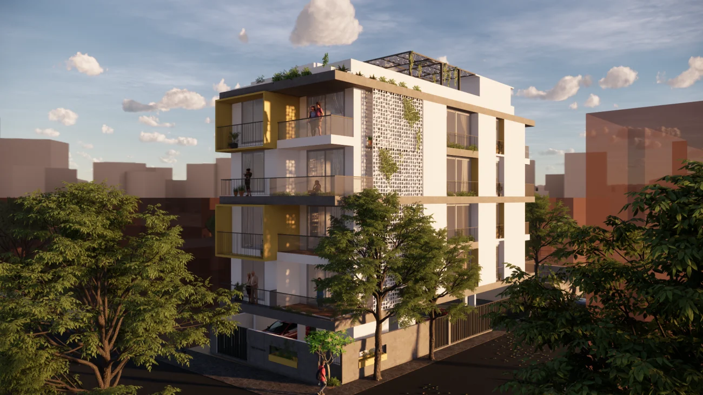

Personalised
A highly personalised approach, with unique concepts, bespoke planning and complete transparency.

Premium homes · Bangalore
TechnoPrime Constructions builds premium, eco-friendly, Vastu-aligned homes in Bangalore, where timeless engineering meets the latest building technology.
Why choose us
TechnoPrime Constructions combines the latest building technology with time-tested engineering, led by a team with a rich legacy of more than 50 years in construction and real estate.
A highly personalised approach, with unique concepts, bespoke planning and complete transparency.
Guaranteed on-time delivery, so you move into your home exactly when you plan to.
Creative use of earth, water, wind and light to build homes that blend with nature.
Vastu elements woven into every building for spiritual and holistic satisfaction.

Premium living in J.P. Nagar, Bangalore.
Our flagship residence brings together amenities-rich, eco-friendly and safe design in one of Bangalore's most established neighbourhoods, behind Ragigudda temple in J.P. Nagar 2nd phase.
Built with nature
True luxury is more than premium finishes. It is a positive impact on residents, the community and the environment. We harmonise timeless values with cutting-edge technology for a journey towards holistic living.
Designed around natural elements for comfort and efficiency.
Vastu elements for a sense of balance and wellbeing at home.
Get in touch
Tell us what you are looking for and we will share details, plans and a site visit for TechnoPrime Vasudha.